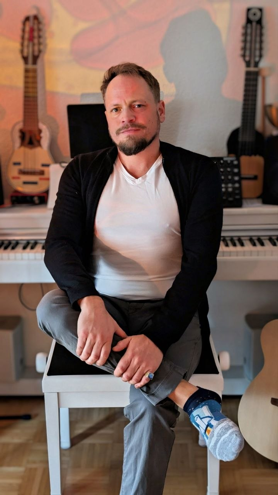
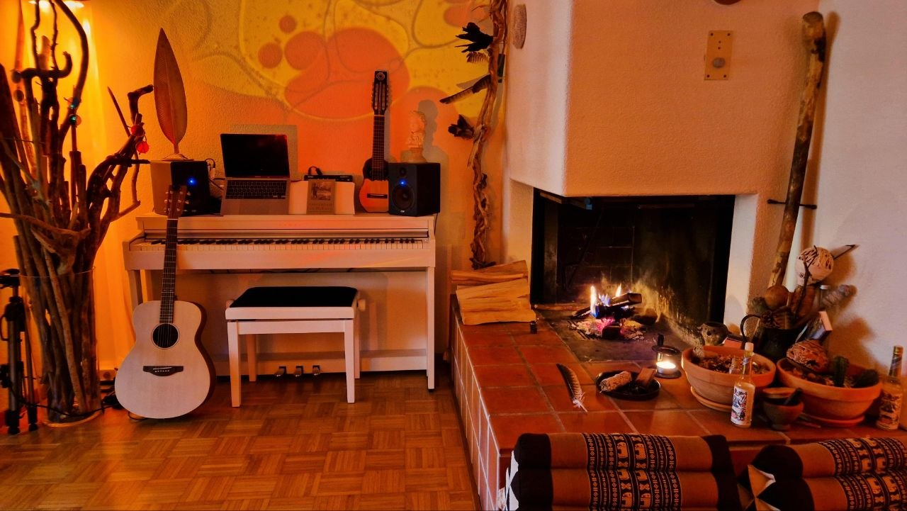

Hey, I'm Emanuel Malacarne — a creative coder and musician based in Switzerland. trippy.ch is my digital playground: part psychedelic blog, part experimental lab. Here I explore the intersection of generative art, interactive shaders, sound and visual storytelling. Think of it as a trippy version of a personal blog — less prose, more portals.

Sounds, sessions, and sonic explorations